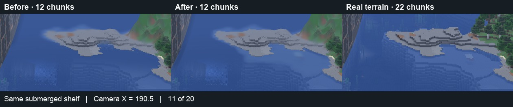
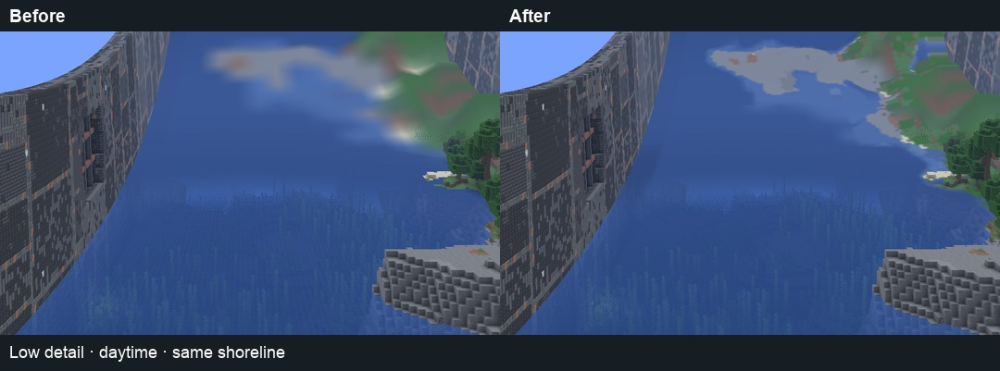
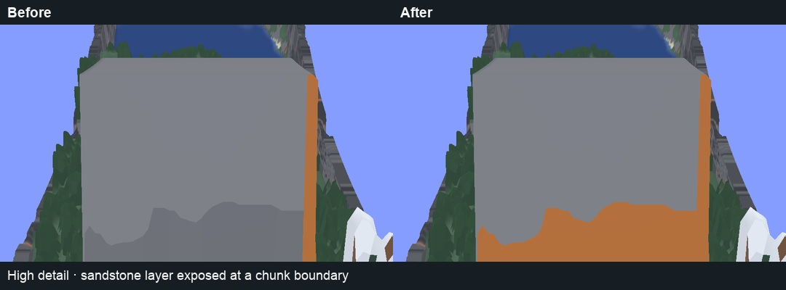
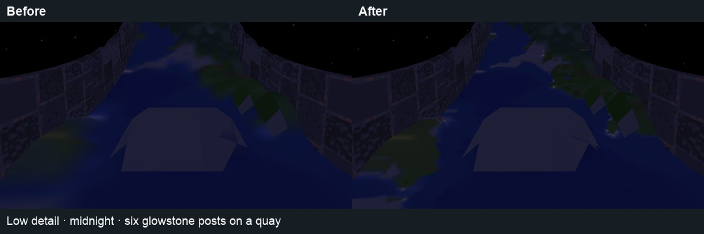
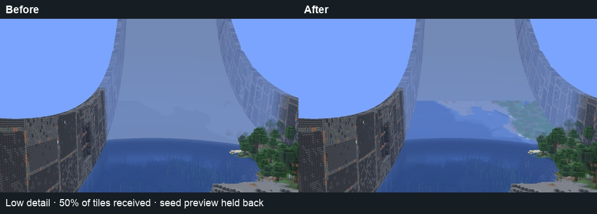

Where real water meets the Atlas
Follow the same submerged shelf over 152 blocks. The first two views use a 12-chunk render distance. The third shows the shelf inside real terrain at 22 chunks. Watch the pale water along the near edge of the stone spit.

Open animation · Measurements by position
| Sample | Before | After |
|---|
| Shallow shelf, all positions | 7.14 | 2.79 |
| Shallow shelf, X = 190.5 | 18.48 | 3.29 |
| Darker water, all positions | 2.94 | 3.33 |
Values are mean absolute RGB channel differences from the real-terrain reference on a 0–255 scale. Lower is closer. No sky-coloured pixels appeared in the deep-water test corridor in either run.
Capture and measurement setup
NeoForge 26.3, seed 255, 2048 × 128 ring, clear noon, Medium detail. Each 2560 × 1440 capture used Y 88, Z 25.5, yaw 90°, pitch 5°. Camera X increased from 110.5 to 262.5 in eight-block steps. The crop tracks the stone spit. A 290 × 84 window below the spit selects shallow and darker pixels using colours in the reference alone. The colour error weights each selected pixel equally across all positions. Pixels must have blue more than 42 above green. The shelf mask uses red 68–92 and green 94–122. The darker mask uses red 48–61 and green 75–93. A second 310 × 90 window checks for pixels within four channel values of the sampled sky. At X = 182.5 the shelf error was 14.33 before, 2.46 after, and 2.51 after with Sodium 0.9.2.
Low-detail shoreline

Wet and dry source samples keep their own colours inside a coarse shoreline cell.
Exposed cliff at a chunk boundary

A sandstone band beneath a stone cap makes the sampling difference visible. Both saves have the same blocks.
Small lights at night

Both copies record all six glowstone posts at light level 15. Low detail now assigns light to the source location within its coarse cell. The difference is subtle at this distance.
Joining while the seed preview is delayed

In this controlled client test, half the real Atlas tiles are available and the seed preview is held back. The received part of the ring appears immediately.